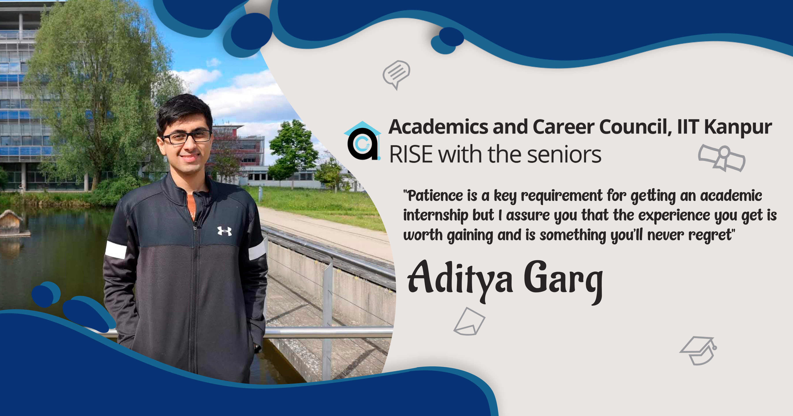
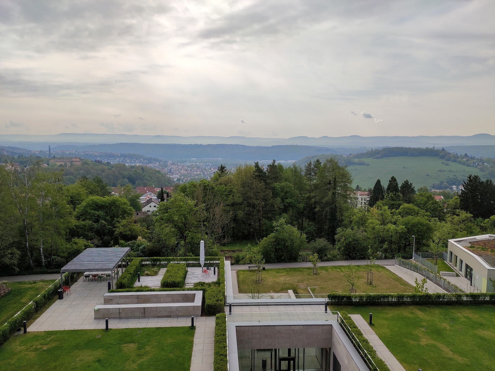
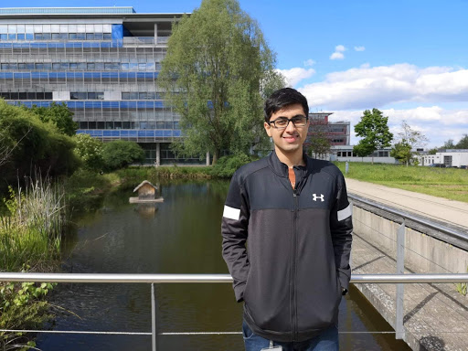

July 2, 2020
In this blog, we have Aditya Garg, a Y16 student sharing his internship experience at Max Planck Institute for Intelligent Systems- Organization, Tuebingen in the field of Empirical Interference.
From having a not very clear idea about which profiles to prepare for, to getting selected in a reputed internship program, he truly believes in the power of patience and persistence.
Read this blog to know more about the to do's essential for an academic intern.

As I entered my 3rd year, I did not have a clear idea of where I wanted to intern at. But I had come to realize that practicing programming questions and pursuing competitive coding was something that I had absolutely no interest in spending my time at. The combination of a moderately high CPI and the bandwagon effect made the decision for me, and I decided to skip preparing for the SPO internship and attempt to obtain an academic intern.

How to proceed
Unlike the relatively straightforward and mostly uniform process for company interns, getting an academic intern is a scattered procedure, with considerable variations in the required formalities. Among the things you would eventually need will be a cover letter, a Statement of Purpose, your CV and 1-2 professors willing to write you recommendations (which in my experience will be the majority of your professors you build up the courage to approach for this). Try to personalize your cover letter as much as possible for each person you send it to, including some detail in the intro para which shows that you have atleast taken a brief look at the person’s research profile, and why you want to work specifically with him. The second paragraph of this can be a brief summary of your project work and academic
accomplishments in college, or simply courses you have undertaken relevant to the area of research. Preferably upload your CV somewhere and include the link in the email, instead of sending it as an attachment. As far as your SOP is concerned, I believe writing it in a story-like manner is the right way to go, where you try to build a narrative of who you are by pointing out specific examples from your life, and then ease into why you want to work in the specific area and what your life goals are. A conversational and personal tone in your SOP will be more engaging to read and stand out!

There are majorly two ways of getting an academic intern, by applying to various programs and by applying independently by emailing professors on your own. The former’s a more structured and less frustrating path, but usually favors people with higher CPIs and getting selected for one is somewhat unpredictable. For the latter, all you can do is maximize the number of people you email and hope one of them gives you a positive reply. The response you get here usually depends on how well the prof’s research interests and your own research background match, and often allows you to have slightly more control over the exact project you will work on. The program I finally got selected for, DAAD-WISE, is somewhat different in that you have to find the professor to work with yourself, and then apply to the program with the approval of the professor as part of the application itself. Due to this, and DAAD’s earlier than others deadline, it is highly recommended to start emailing the profs you want to work with in Germany as early as August itself, so that you have a comfortable window of time to complete the long-ish application form.
The Internship
Patience is a key requirement for getting an academic internship, and the torturous cycle of rejections by multiple places and the tiring wait for a favorable reply can take its toll. I got my final confirmation in January from the Empirical Inference department at Max Planck Institute for Intelligent Systems in Tuebingen. I worked on the identification of the system parameters of a robotic arm, done under a causal setting. It involved building a simulator of a robot to fine-tune the optimization algorithm, and then applying it to actual real world data to calculate the forward dynamics and estimate the trajectory. My experience there is something I will cherish for years to come. I had a strong case of imposter syndrome when I started, and the feeling of not being able to make a worthwhile contribution initially existed at the back of my mind. But as time passed, I realized that the ability to adapt to new material easily that helps you pass courses is exactly the skill you need to get started and produce results in a research setting as well. And fortunately, I found that there was never a scarcity of people willing to help you figure things out, whether it’s the math behind a research paper or one of the various forms that the German bureaucratic requires you to fill during your stay there. And the sooner you get accustomed to seeking help, the easier and more comfortable your time spent becomes. My lab provided everybody total freedom to arrive and leave at your preferred timings, and in my opinion, the relaxed work-life that research offers is one of the best perks of pursuing it.

Perks of Europe
Europe is an excellent place to be at in your summers, with perfect weather throughout and the possibility of being in a new country every weekend. There is an abundance of art and culture to explore, along with numerous recreational options at your disposal. Living abroad on your own gives you immense confidence in your ability to function in varied social situations and a perspective shift on many of the things one takes for granted till then. Personally, I found these three months to be one of the most exciting and productive periods of my life, and were helpful in clearing the doubts I had regarding pursuing academia as my career. In case someone is on the fence regarding academic internships, I assure you that the experience you get is worth gaining and is something you’ll never regret.
- Aditya Garg
-edited by Purushottam Ojha